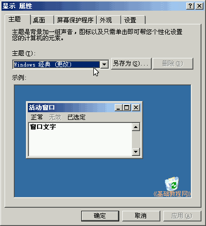
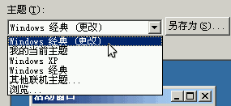
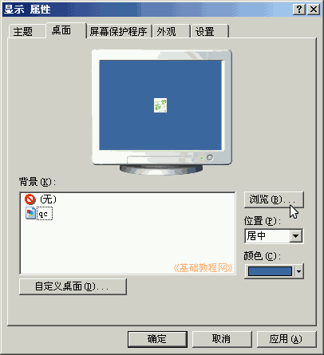
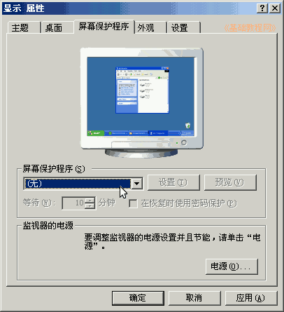
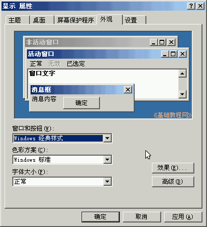
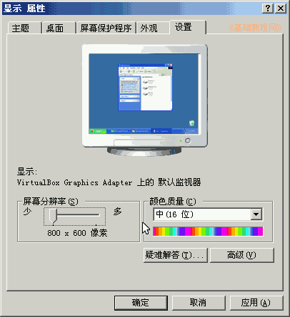
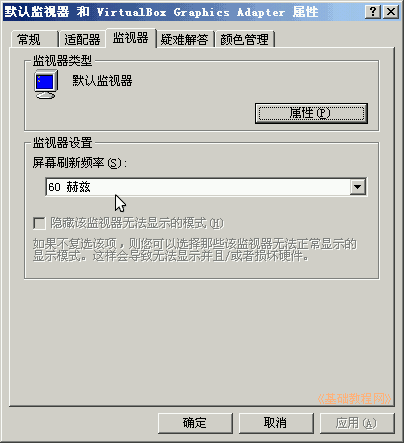

控制面板基础教程
作者：TeliuTe 来源：基础教程网
显示属性可以设定桌面大小、背景、屏幕保护和显卡、显示器等，下面我们来看一个练习；
1、显示属性
1）进入经典视图，点“显示”图标出来一个面板；
2）里面包括主题、桌面、屏幕保护、外观、设置；

2、设置选项
1）在“主题”标签里，可以选择一个桌面主题，经典主题淡雅也比较节省资源；

2）在“桌面”标签里，可以点“浏览”设置一幅桌面背景，下边的拉伸和居中，可以设定图片排列方式；

3）在“屏幕保护”标签里，可以选择一个屏幕保护程序，当一段时间没有使用电脑时，会自动运行屏幕保护程序；

4）在“外观”标签里，可以设定窗口的效果，以及菜单显示效果；

5）在“设置”标签里，可以设置屏幕分辨率和颜色数，根据自己显示器的大小进行设置；

6）点右下角的“高级”按钮，可以进一步设置刷新率和其他显示属性；

7）修改分辨率和刷新率，点确定后屏幕会变黑闪一下，出来一个是否保留的提示，如果正常点“是”，不想使用点“否”；
分辨率或刷新率出问题，可以进到安全模式，然后进行调整或重新安装显卡驱动；
本节学习了显示属性的基础知识，如果你成功地完成了练习，请继续学习下一课内容；
本教程由86团学校TeliuTe制作|著作权所有
基础教程网：http://teliute.org/
美丽的校园……
转载和引用本站内容，请保留版权信息和本站链接。